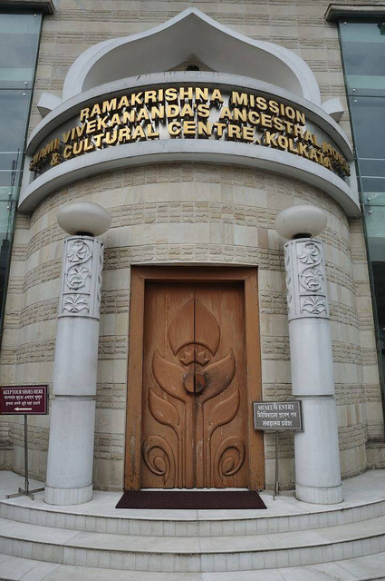

“This life is short, the vanities of the world are transient,
but they alone live who live for others, the rest are more dead
than alive.”
Rare photo of Swami ji Chicago, September 1893
About
A spiritual genius of commanding intellect and power, Swami
Vivekananda crammed immense labor and achievement into his
short life (1863–1902). Born Narendranath Datta, Vivekananda
in his youth was fascinated by the agnostic Western schools of
philosophy.
At the same time, vehement in his desire to know the truth
about God, he questioned people of holy reputation, asking
them if they had seen God. He found such a person in Sri
Ramakrishna, who became his master, allayed his doubts, guided
him on the spiritual path, and transformed him into sage and
prophet with authority to teach.
After Sri Ramakrishna's passing in 1886, Vivekananda renounced
the world and crisscrossed India as a wandering monk. His
mounting compassion for India's people drove him to seek
material help from the West. Accepting an opportunity to
represent Hinduism at Chicago's Parliament of Religions in
1893, Vivekananda won instant celebrity in America and a ready
forum for his spiritual teaching.
For three years he spread the Vedanta philosophy and religion
in America and England and then returned to India to found the
Ramakrishna Math and Ramakrishna Mission. He passed away on
July 4, 1902, after a brief second visit to the West. His
lectures and writings have been gathered into nine volumes of
his Complete Works.
Most of the Vedanta Societies which were founded in America
and Europe up through the 1930s can trace their origins
directly to Swami Vivekananda or the people who heard him
speak from 1893 through 1900.
Chronology of Main Events related to Swami Vivekananda

Gourmohan Mukherjee Street, birthplace of Vivekananda,
now converted into a museum and cultural centre
1863
Vivekananda was born Narendranath Datta (shortened to
Narendra or Naren) in a Bengali family at his ancestral
home at 3 Gourmohan Mukherjee Street in Calcutta, the
capital of British India, on
12 January 1863 during the Makar Sankranti
festival.
He belonged to a traditional family and was one of nine
siblings.His father, Vishwanath Datta, was an attorney
at the Calcutta High Court. Durgacharan Datta,
Narendra's grandfather was a Sanskrit and Persian
scholar who left his family and became a monk at age
twenty-five.His mother, Bhubaneswari Devi, was a devout
housewife.The progressive, rational attitude of
Narendra's father and the religious temperament of his
mother helped shape his thinking and personality.
1879
In 1879, after his family's return to Calcutta, he was the
only student to receive first-division marks in the
Presidency College entrance examination. He was an avid
reader in a wide range of subjects, including philosophy,
religion, history, social science, art and literature. He
was also interested in Hindu scriptures, including the
Vedas, the Upanishads, the Bhagavad Gita, the Ramayana, the
Mahabharata and the Puranas.
Narendra was trained in Indian classical music, and
regularly participated in physical exercise, sports and
organised activities. Narendra studied Western logic,
Western philosophy and European history at the General
Assembly's Institution (now known as the Scottish Church
College).
Ramakrishna, guru of Vivekananda
1880
At the threshold of youth Narendra had to pass through a
period of spiritual crisis when he was assailed by
doubts about the existence of God. It was at that time
he first heard about Sri Ramakrishna from one of his
English professors at college.
One day in November 1881, Narendra went to meet Sri
Ramakrishna who was staying at the Kali Temple in
Dakshineshwar. He straightaway asked the Master a
question which he had put to several others but had
received no satisfactory answer: “Sir, have you seen
God?” Without a moment’s hesitation, Sri Ramakrishna
replied: “Yes, I have. I see Him as clearly as I see
you, only in a much intenser sense.”
Apart from removing doubts from the mind of Narendra,
Sri Ramakrishna won him over through his pure, unselfish
love. Thus began a guru-disciple relationship which is
quite unique in the history of spiritual masters.
Narendra now became a frequent visitor to Dakshineshwar
and, under the guidance of the Master, made rapid
strides on the spiritual path. At Dakshineshwar,
Narendra also met several young men who were devoted to
Sri Ramakrishna, and they all became close friends.
After a few years two events took place which caused
Narendra considerable distress. One was the sudden death
of his father in 1884. This left the family penniless,
and Narendra had to bear the burden of supporting his
mother, brothers and sisters. The second event was the
illness of Sri Ramakrishna which was diagnosed to be
cancer of the throat.
In September 1885 Sri Ramakrishna was moved to a house
at Shyampukur, and a few months later to a rented villa
at Cossipore. In these two places the young disciples
nursed the Master with devoted care. In spite of poverty
at home and inability to find a job for himself,
Narendra joined the group as its leader.
Baranagore Math, Jan 30, 1887
1887
After the Master’s passing, fifteen of his young
disciples (one more joined them later) began to live
together in a dilapidated building at Baranagar in North
Kolkata. Under the leadership of Narendra, they formed a
new monastic brotherhood, and in 1887 they took the
formal vows of sannyasa, thereby assuming new names.
Narendra now became Swami Vivekananda (although this
name was actually assumed much later.)
During his travels all over India, Swami Vivekananda was
deeply moved to see the appalling poverty and
backwardness of the masses. He was the first religious
leader in India to understand and openly declare that
the real cause of India’s downfall was the neglect of
the masses. The immediate need was to provide food and
other bare necessities of life to the hungry millions.
For this they should be taught improved methods of
agriculture, village industries, etc.
It was in this context that Vivekananda grasped the crux
of the problem of poverty in India (which had escaped
the attention of social reformers of his days): owing to
centuries of oppression, the downtrodden masses had lost
faith in their capacity to improve their lot. It was
first of all necessary to infuse into their minds faith
in themselves.
Most probably taken on the afternoon of the opening
day of the Parliament of Religions on September 11,
1893.
Swami Vivekananda heard about the World’s Parliament of
Religions to be held in Chicago in 1893. His friends and
admirers in India wanted him to attend the Parliament.
He too felt that the Parliament would provide the right
forum to present his Master’s message to the world, and
so he decided to go to America. Another reason which
prompted Swamiji to go to America was to seek financial
help for his project of uplifting the masses.
Swamiji, however, wanted to have an inner certitude and
divine call regarding his mission. Both of these he got
while he sat in deep meditation on the rock-island at
Kanyakumari. With the funds partly collected by his
Chennai disciples and partly provided by the Raja of
Khetri, Swami Vivekananda left for America from Mumbai
on 31 May 1893.
His speeches at the World’s Parliament of Religions held
in September 1893 made him famous as an ‘orator by
divine right’ and as a ‘Messenger of Indian wisdom to
the Western world’. After the Parliament, Swamiji spent
nearly three and a half years spreading Vedanta as lived
and taught by Sri Ramakrishna, mostly in the eastern
parts of USA and also in London.
Sitting on chair (from L): Tarapada (a monk from
another Order), Swami Shivananda, Swamiji, Swami
Niranjanananda, Swami Sadananda. Standing (from L):
Alasinga Perumal, J. J. Goodwin, M. N. Banerjee, and
other devotees. Sitting(from L): (second) Biligiri
Iyengar, (fourth) M. C. Nanjunda Rao.
He returned to India in January 1897. In response to the
enthusiastic welcome that he received everywhere, he
delivered a series of lectures in different parts of
India, which created a great stir all over the country.
Through these inspiring and profoundly significant
lectures Swamiji attempted to do the following:1)
to rouse the religious consciousness of the people and
create in them pride in their cultural heritage2)
to bring about unification of Hinduism by pointing out
the common bases of its sects3)to focus the attention of educated people on the
plight of the downtrodden masses, and to expound his
plan for their uplift by the application of the
principles of Practical Vedanta.
He founded on 1 May 1897 a unique type of organization
known as Ramakrishna Mission.
Belur Math
1898
In early 1898 Swami Vivekananda acquired a big plot of
land on the western bank of the Ganga at a place called
Belur to have a permanent abode for the monastery and
monastic Order originally started at Baranagar, and got
it registered as Ramakrishna Math after a couple of
years.
Here Swamiji established a new, universal pattern of
monastic life which adapts ancient monastic ideals to
the conditions of modern life, which gives equal
importance to personal illumination and social service,
and which is open to all men without any distinction of
religion, race or caste.
South Pasadena, Jan 1900-The house, now known as the
Vivekananda House, is located at 309 Monterey Road.
1899-1901
In June 1899 he went to the West on a second visit. This
time he spent most of his time in the West coast of USA.
After delivering many lectures there, he returned to
Belur Math in December 1900.
Shillong, 1901
1902
The rest of his life was spent in India, inspiring and
guiding people, both monastic and lay. Incessant work,
especially giving lectures and inspiring people, told
upon Swamiji’s health. His health deteriorated and the
end came quietly on the night of 4 July 1902.
Before his Mahasamadhi he had written to a Western
follower:
“It may be that I shall find it good to get outside
my body, to cast it off like a worn out garment. But I
shall not cease to work. I shall inspire men
everywhere until the whole world shall know that it is
one with God.”